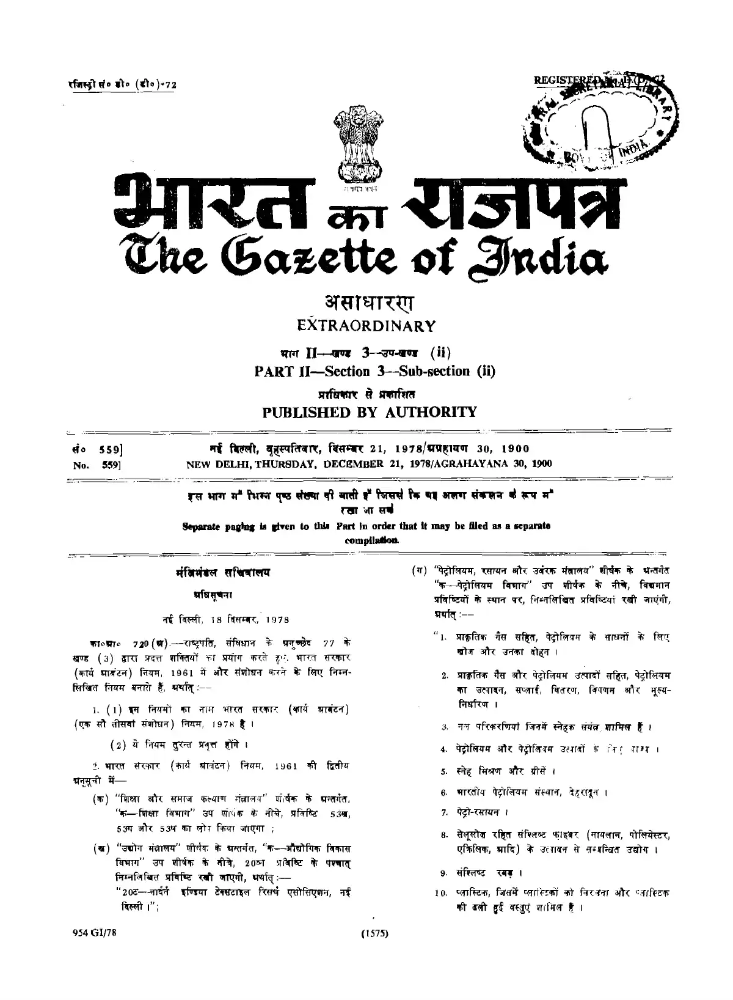
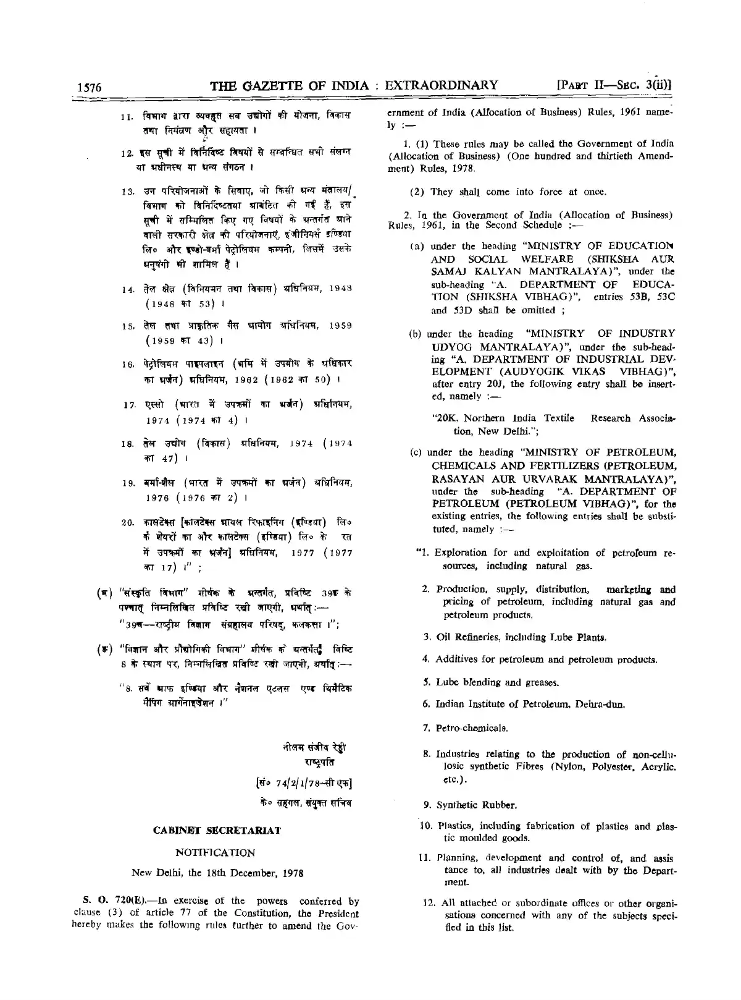
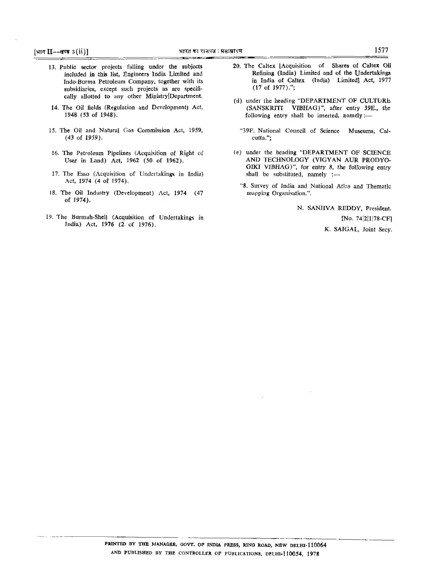

Amendment #130 (S.O. 720(E), 1978)
5 changes: 0 to the First Schedule, 5 to the Second Schedule. 4 applied1 not applied
What it did to the ministries
- grewMinistry of Petroleum, Chemicals and Fertilizers grows from 30 to 37 subjects change 3 · histories: Petroleum, Chemicals and Fertilizers
The order, page by page
Page 1 of 4

Page 2 of 4

123Schedule 2 › MINISTRY OF EDUCATION AND SOCIAL WELFARE › DEPARTMENT OF EDUCA- TION › entry 53B; Schedule 2 › MINISTRY OF EDUCATION AND SOCIAL WELFARE › DEPARTMENT OF EDUCA- TION › entry 53C; Schedule 2 › MINISTRY OF EDUCATION AND SOCIAL WELFARE › DEPARTMENT OF EDUCA- TION › entry 53D
applied at schedule 2 › ministry MINISTRY OF EDUCATION AND SOCIAL WELFARE › department A › group_heading C › entry 53B in the Rules after #130
after Schedule 2 › MINISTRY OF INDUSTRY › DEPARTMENT OF INDUSTRIAL DEV- ELOPMENT › entry 20J
- 20K. Northern India Textile Research Association, New Delhi.
not applied (the change could not be placed in the Rules as read; see How this document was read)
Schedule 2 › MINISTRY OF PETROLEUM, CHEMICALS AND FERTILIZERS › DEPARTMENT OF PETROLEUM
- 1. Exploration for and exploitation of petroleum resources, including natural gas.
- 2. Production, supply, distribution, marketing and pricing of petroleum, including natural gas and petroleum products
- 3. Oil Refineries, including Lube Plants.
- 4. Additives for petroleum and petroleum products.
- 5. Lube blending and greases.
- 6. Indian Institute of Petroleum, Dehra-dun.
and 14 more
- 7. Petro-chemicals.
- 8. Industries relating to the production of non-cellulosic synthetic Fibres (Nylon, Polyester Acrylic. etc.).
- 9. Synthetic Rubber.
- 10. Plastics, including fabrication of plastics and plastic moulded goods.
- 11. Planning, development and control of, and assis tance to all industries dealt with by the Department.
- 12. All attached or subordinate offices or other organisations concerned with any of the subjects specifled in this list. 1577
- 13. Public sector projects falling under the subjects included in this list, Engineers India Limited and Indo-Burma Petroleum Company, together with its subsidiaries, except such projects as are specifically allotted to any other Ministry Department.
- 14. The Oil fields (Regulation and Development) Act 1948 (53 of 1948).
- 15. The Oil and Natural Gas Commission Act, 1959 (43 of 1959).
- 16. The Petroleum Pipelines (Acquisition of Right of User in Land) Act, 1962 (50 of 1962).
- 17. The Esso (Acquisition of Undertakings in India) Act, 1974 (4 of 1974).
- 18. The Oil Industry (Development) Act, 1974 (47 of 1974).
- 19. The Burmah-Shell (Acquisition of Undertakings in India) Act, 1976 (2 of 1976). PRINTED BY THE MANAGER, GOVT. OF INDIA AND PUBLISHED BY THE CONTROLLER OF
- 20. The Caltex [Acquisition of Shares of Caltex Oil Refining (India) Limited and of the Undertakings in India of Caltex (India) Limited] Act, 1977 (17 of 1977).
applied at schedule 2 › ministry MINISTRY OF PETROLEUM, CHEMICALS AND FERTILIZERS › department A in the Rules after #130
read page break
Page 3 of 4

45after Schedule 2 › DEPARTMENT OF CULTURE › entry 39E
- 39F. National Council of Science Museums, Calcutta.
applied at schedule 2 › department DEPARTMENT OF CULTURE › entry 39F in the Rules after #130
Schedule 2 › DEPARTMENT OF SCIENCE AND TECHNOLOGY › entry 8
- 8. Survey of India and National Atlas and Thematic mapping Organisation.
applied at schedule 2 › department DEPARTMENT OF SCIENCE AND TECHNOLOGY › entry 8 in the Rules after #130
Page 4 of 4

How this document was read
Known issues
| Change | Issue | Known as |
|---|---|---|
| 2 | change 2: no entry 20J under schedule 2 › ministry MINISTRY OF INDUSTRY › department A | Entries not in the state |
From the Government of India (Allocation of Business) Rules, 1961 and their amendments, as published by the Cabinet Secretariat (cabsec.gov.in), read by orgpedia. The readings of the older scanned gazettes have known gaps.